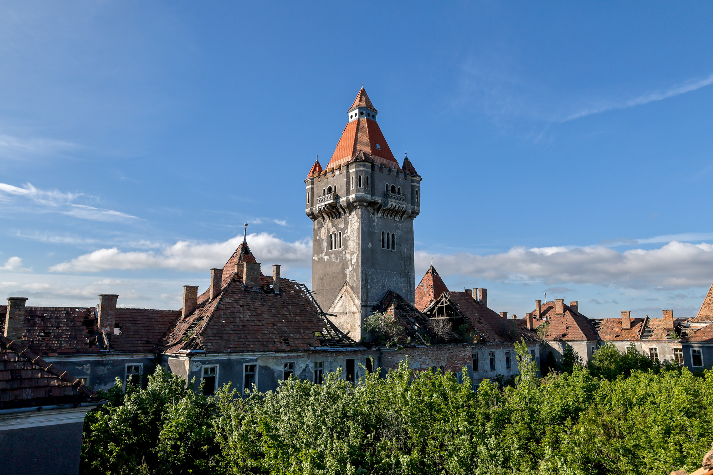
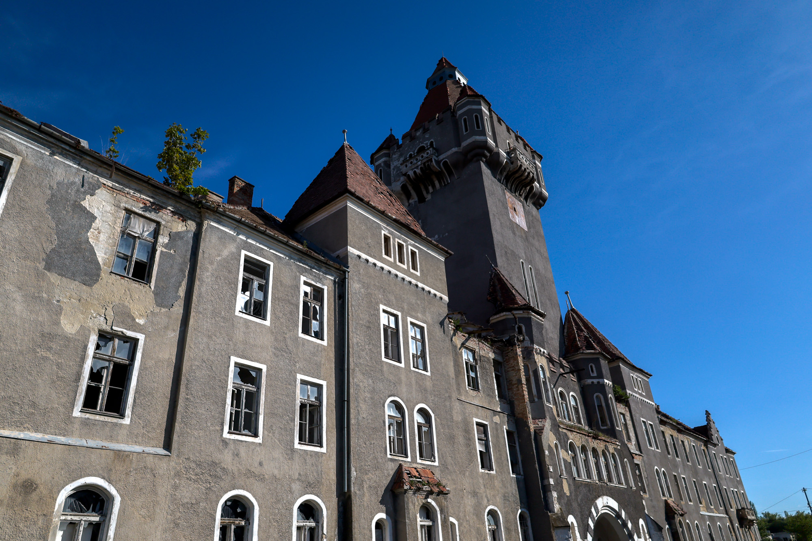
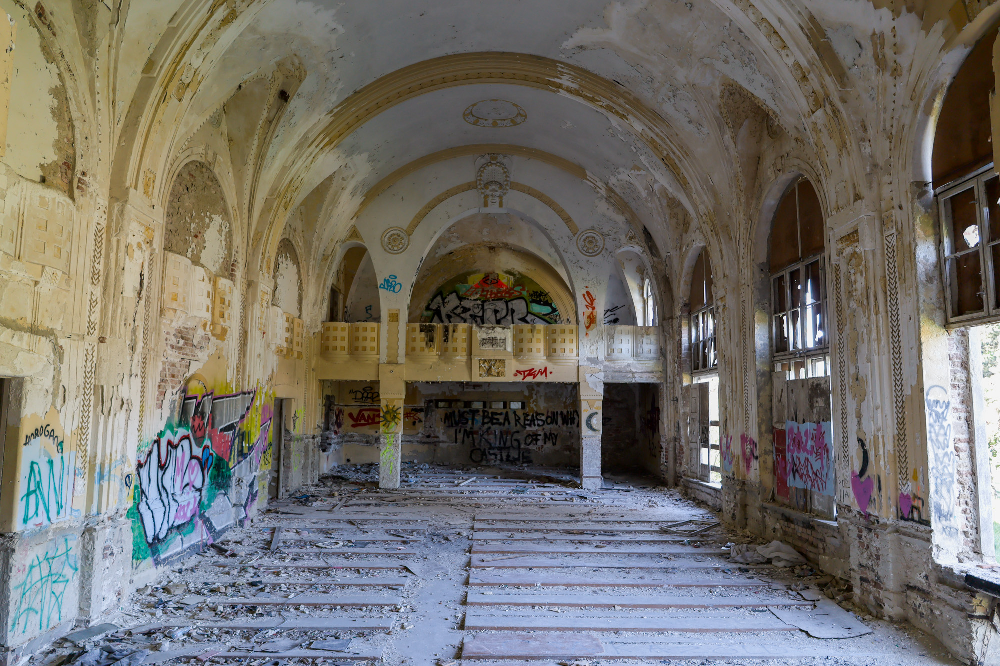
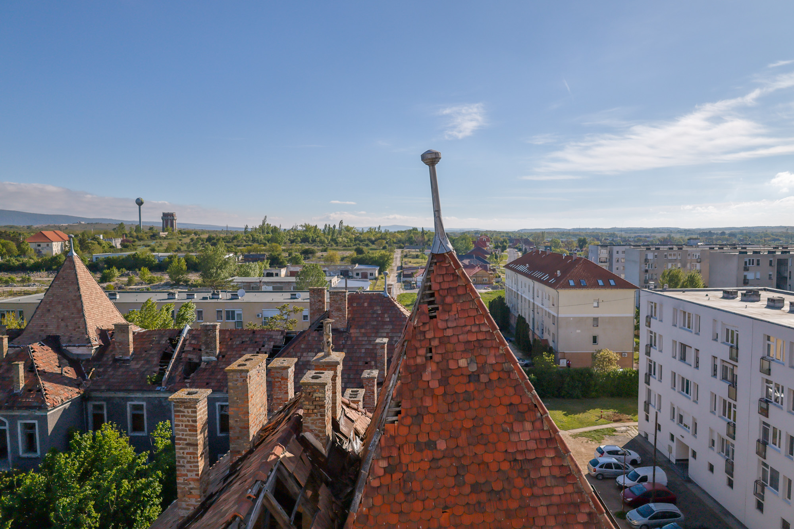
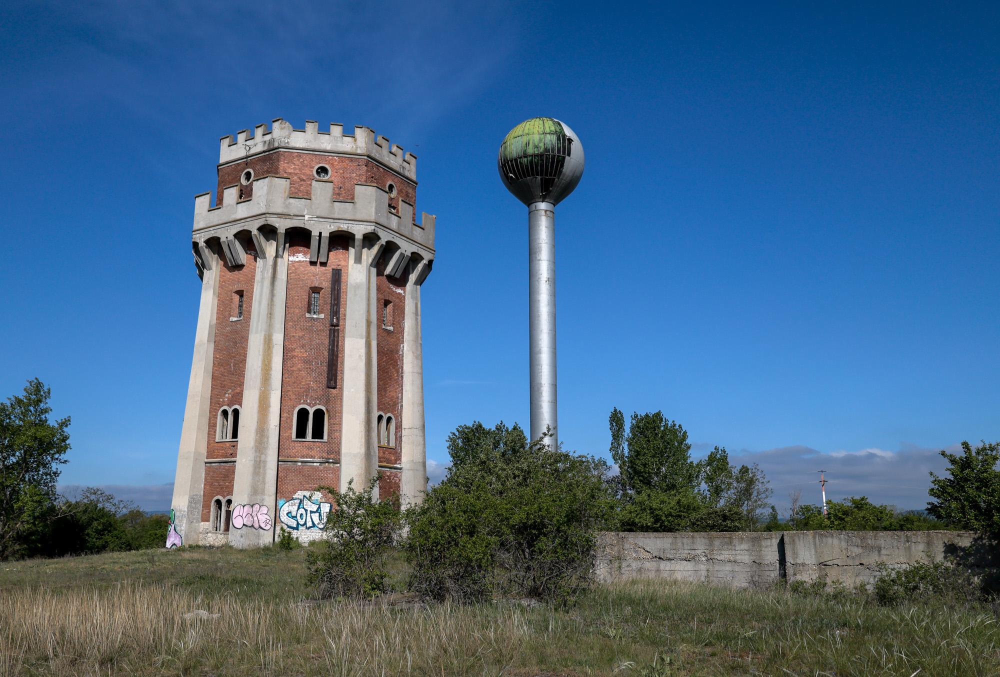
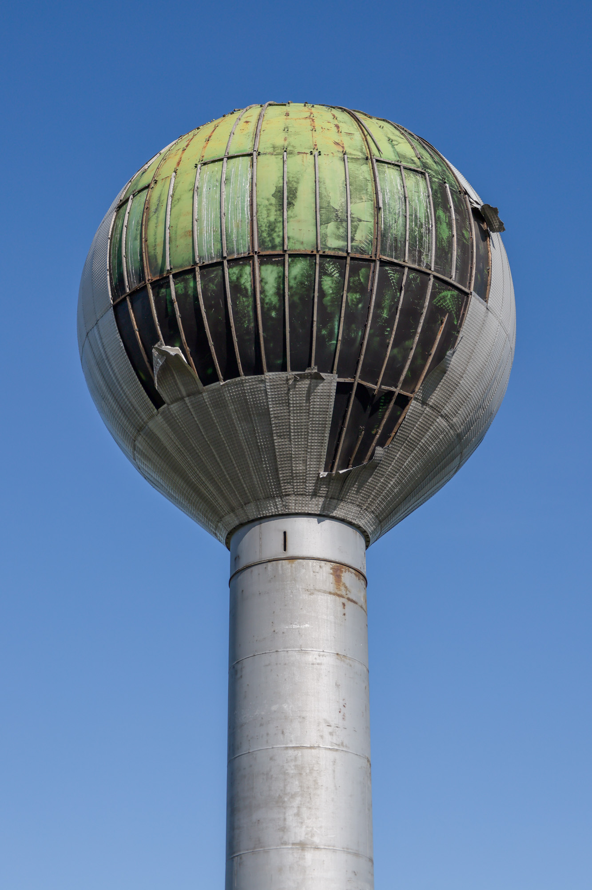
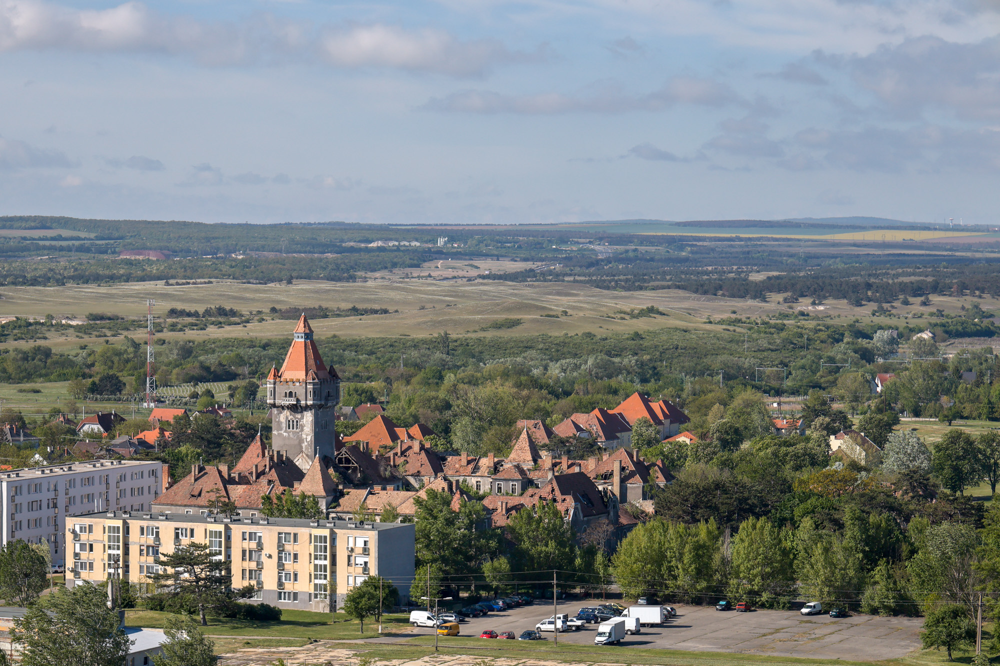

While this abandoned building resembles a castle, it’s all just for show. Since the fall of the Soviet Union in 1991, this military barracks has been decaying and generally open to the public. Entering inside reveals the tower’s true purpose: to hide the barracks' main water tank. It is joined by two sibling water towers on the outskirts of town, all together sitting empty and dry.






